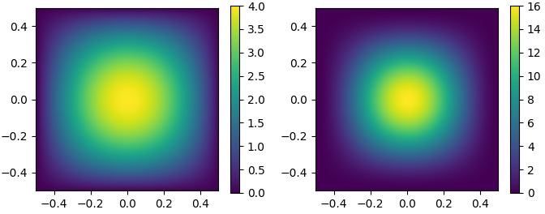

Binomial filters
This article is about binomial filters. These filters are common in the signal and image processing domain. The best-known instance of binomial filters is the moving average filter \([\frac{1}{2},\frac{1}{2}]\). The article shows:
- How binomial filters are computed by repeatedly convolving the moving average filter with itself
- How the resulting filter coefficients correspond to the binomial coefficients
- The frequency response computed with the DFT
- Generalization to the 2D case
To keep things simple, only unnormalized filters (e.g. \([1,1]\) instead of \([\frac{1}{2},\frac{1}{2}]\)) are discussed.
Compute binomial filter coefficients
The filter coefficients of an order \(i\) binomial filter are the coefficients found in the \(i\)-th row of Pascal's triangle. The first few unnormalized filters \(b^i\) are listed in the following (superscript number denotes filter order):
- \(b^0=[1]\)
- \(b^1=[1, 1]\)
- \(b^2=[1, 2, 1]\)
- \(b^3=[1, 3, 3, 1]\)

Fig. 1: Filter coefficients of \(b^1\) (left) and \(b^2\) (right).
Computing the filter coefficients (or equally, the rows of Pascal's triangle) can be interpreted in terms of convolution: if convolving the filter \(b_1=[1, 1]\) \(i\)-times with itself, we get an order \(i\) filter. Let's assume we already have the coefficients for an order \(i-1\) filter \(b_{i-1}\) and we want to compute an order \(i\) filter \(b_{i}\):
\[b^i_n=(b^1 * b^{i-1})_n = \sum_k{b^1_k \cdot b^{i-1}_{n-k}} = b^{i-1}_n + b^{i-1}_{n-1} \]Here, \(*\) denotes convolution and the subscript number is the sequence index. The result \(b^{i-1}_n + b^{i-1}_{n-1}\) essentially computes Pascal's triangle when we start with \(b^0=[1]\) in the first row: take the two elements \(n\) and \(n-1\) from the row above (and zero if the element does not exist), and add them together. As an example, if we want to compute the order 2 filter (see Fig. 1), we get the sequence: \([0+1, 1+1, 1+0]=[1,2,1]\). Some observations:
- The filter coefficients are selected in a way that they remove the highest possible frequency (Nyquist frequency) in a signal completely
- A signal only containing this Nyquist frequency might look like: \([1,-1,1,-1,...]\)
- The moving average applied on such a signal adds +1 and -1 at position, which obviously yields a sequence of zeros (corresponding to the zero in the frequency response)
- As \(i\) gets larger, the filter approaches the shape of a Gaussian function
Frequency response
Here we compute the frequency response of the unnormalized order 1 filter where the superscript number is the filter order and the subscript number is the frequency index:
\[B_k^1= \sum_n^{N-1}{b_n^1 \cdot e^{-j \cdot 2 \cdot \pi \cdot \frac{n \cdot k}{N}}} = e^0 + e^{-j \cdot 2 \cdot \pi \cdot \frac{k}{N}} = 1 + cos(2 \cdot \pi \cdot \frac{k}{N}) - j \cdot sin(2 \cdot \pi \cdot \frac{k}{N}) \]We are interested in how certain frequencies \(k\) get amplified/attenuated, so we compute the absolute value of \(B_k^1\). To keep things simple, we compute the squared absolute value \(|B_k|^2\) and set \(\alpha=2 \cdot \pi \cdot \frac{k}{N}\).
\[|B_k^1|^2 =(1+cos(\alpha))^2 + sin(\alpha)^2 = 1 + 2 \cdot cos(\alpha) + cos(\alpha)^2 +sin(\alpha)^2 = 2 + 2 \cdot cos(\alpha)\]Some observations:
- The frequency response (see Fig. 2) reveals the binomial filter as a low pass
- There is no ripple in the response function as known from other filters
- It has a maximum at the frequency index \(k=0\)
- It has a zero at the frequency index \(k=N/2\) , so this frequency gets completely removed from the signal
- The frequency index \(k=N/2\) corresponds to the highest possible frequency (Nyquist frequency)
- An order \(i\) filter is computed by convolving an order 1 filter \(i\)-times, corresponding to multiplying the frequency response \(i\)-times with itself
- As \(i\) gets larger, the frequency response approaches the shape of a Gaussian function

Fig. 2: Frequency response \(|B^1|\) (left) and \(|B^2|\) (right). The frequency axis is normalized to that 1 corresponds to the sampling frequency.
Binomial filters in 2D
There are two ways to compute the 2D filters. Either take the outer product of two 1D filters, or start with the 2D filter \([[1,1], [1,1]]\) and convolve it with itself as in the 1D case. The first few unnormalized filters \(b^i\) are listed in the following (see Fig. 3 for two samples):
- \(b^0=[[1]]\)
- \(b^1=[[1, 1], [1,1]]\)
- \(b^2=[[1, 2, 1], [2,4,2], [1,2,1]]\)

Fig. 3: 2D filter coefficients of \(b^1\) (left) and \(b^2\) (right).
The frequency response is shown in Fig. 4. It gets closer to a 2D Gaussian distribution as the order \(i\) gets larger. Again, as in the 1D case, the frequency response contains no ripple.
Fig. 4: 2D frequency response \(|B^1|\) (left) and \(|B^2|\) (right). The frequency axis is normalized to that 0.5 corresponds to the Nyquist frequency.
Conclusion
It was shown how a binomial filters of arbitrary order \(i\) is computed by convolving the moving average filter \([1,1]\) \(i\)-times with itself. Further, the frequency response for the moving average filter was derived. Higher order frequency responses of order \(i\) are computed by taking the response of the moving average filter to the power of \(i\). 2D filters can easily be computed from the 1D filters.
Harald Scheidl, 2021